Toronto neighbourhoods
Canada as the first country, with Toronto's neighbourhoods as its six zones, easiest to hardest. Each mock is a walk screen on the 20% tilt camera with the taller sky band (the message strip will sit over the flat sky at the top), new skyline art for the neighbourhood, and roadside props on both verges that scroll with the road at their depth. Below each is a sheet of its new props at 2x. Nothing here is built.
Cabbagetown: Easiest
Cabbagetown, the easiest zone: a calm Victorian street that ends at the Necropolis chapel and Riverdale Farm's red barn, with bay-and-gable rowhouses either side, Wellesley Park's trees behind and the CN Tower far off.
Along the verges: red, buff and painted bay-and-gable rowhouses with white bargeboard, stained-glass transoms and coloured doors, a cat in a window, a neighbour on a stoop, maples, a picket garden of cabbages and kale, a sunflower plot and a goat pen with a hen on the post.
The sidewalk is narrowed to 184 road px so the porches show; the neighbour is the one person drawn in a roadside prop, which the current roadside rule does not allow.
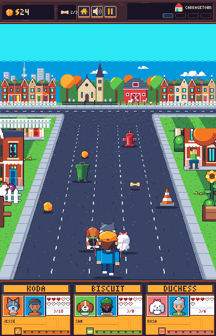
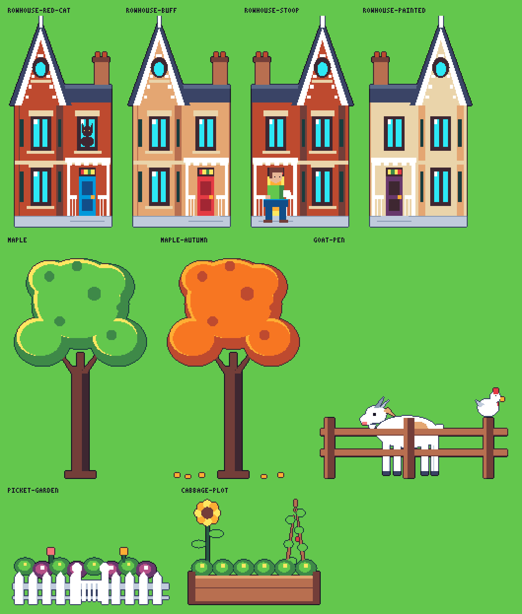
High Park: Easy
High Park, easy: a grey park drive dusted with cherry petals, Grenadier Pond and its cattails along the left verge, a dirt side trail with a jogger, the zoo's bison, a maple leaf bed and black oaks on the right.
The backdrop has Bloor Street's apartment slabs and the CN Tower far off, swans on the pond, cherry blossom on its east bank, Colborne Lodge on its hill, the Hillside Gardens maple leaf and the zoo's bison, llama and capybaras.
A raccoon peers from an oak hollow with a black squirrel on the trunk, and a grey squirrel sits on a bench.
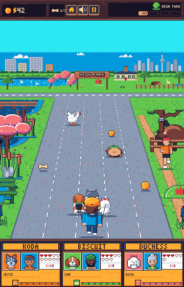
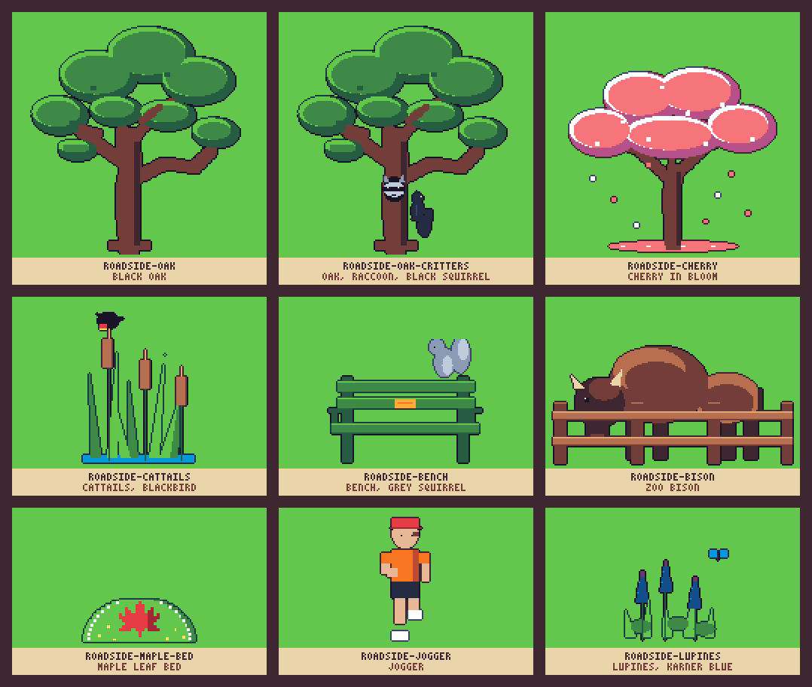
Kensington Market: Medium
Kensington Market: painted bay-and-gable houses turned shops (fruit, cheese, vintage, spices, coffee) under string lights, Bellevue Square's parkette, and a mural wall with the CN Tower behind it.
The market street is worn asphalt with a narrow sidewalk and a brick forecourt, where fruit stands, clothing racks, spice sacks, post-and-ring bike racks, the garden car, a busker and shoppers scroll past.
Medium, crowded and quirky: the café patio and a sandwich board narrow the lanes.
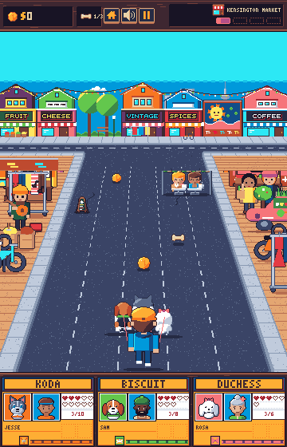
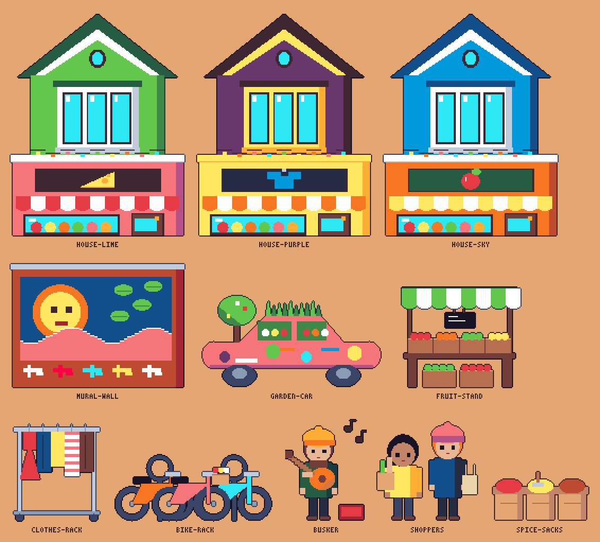
Distillery District: Medium-hard
The Distillery District: red-brick Gooderham and Worts warehouses with the painted sign, the chimney stack, an iron catwalk and a festoon of lights, the limestone distillery with the market sign, and the CN Tower and glass condos behind.
A cobbled granite lane between narrow brick walks; the verges carry barrels, cafe tables, iron lamps hung with lights, the Love Lock heart, the steel spider, a market chalet, and people with prams and coffee.
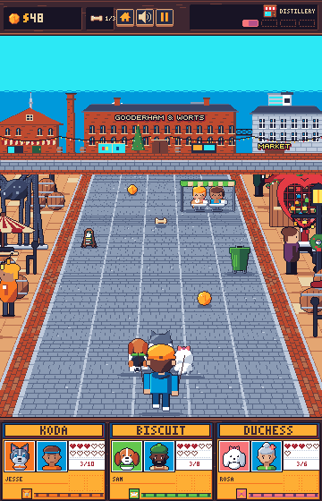
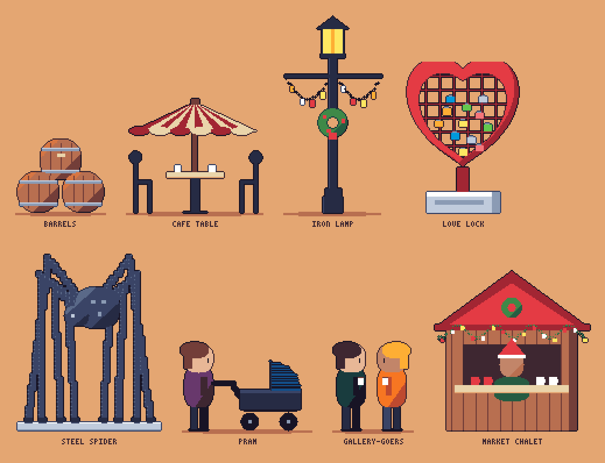
Yonge Street: Hard
Yonge Street at blue hour: the CN Tower over glass towers, Yonge-Dundas Square's screens and billboards facing the street end, and a red TTC streetcar under its wire on Dundas.
The road is dark asphalt with two streetcar tracks; past the curb a furniture strip carries hot dog carts, newspaper boxes, a TTC stop and shelter, lamps with maple-leaf banners, drums and a hoarding.
Shoppers mill on the walk in front of neon shops (a record shop, a pizza place, a theatre marquee, souvenirs) that rise from behind the band as they scroll in.
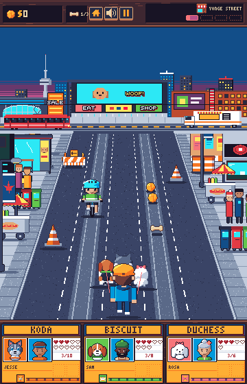
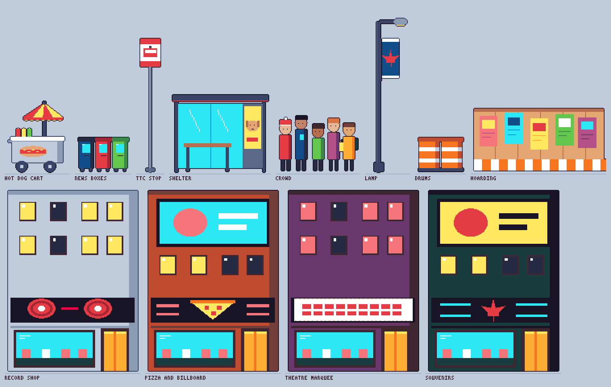
The Beaches: Hardest
The Beaches: the walk runs down the boardwalk's planks to the Martin Goodman Trail, with Lake Ontario to the horizon, sailboats, the Leuty lifeguard station and dogs on the far beach, the CN Tower far to the west and the R.C. Harris plant on its bluff to the east.
On the verges, sand with Muskoka chairs, a volleyball net, a kite flyer, a lifeguard stand, a sunbather and a ring buoy post, the lake's waves on the right and the park's lawn on the left.
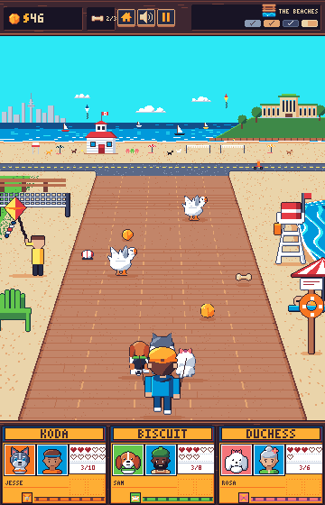
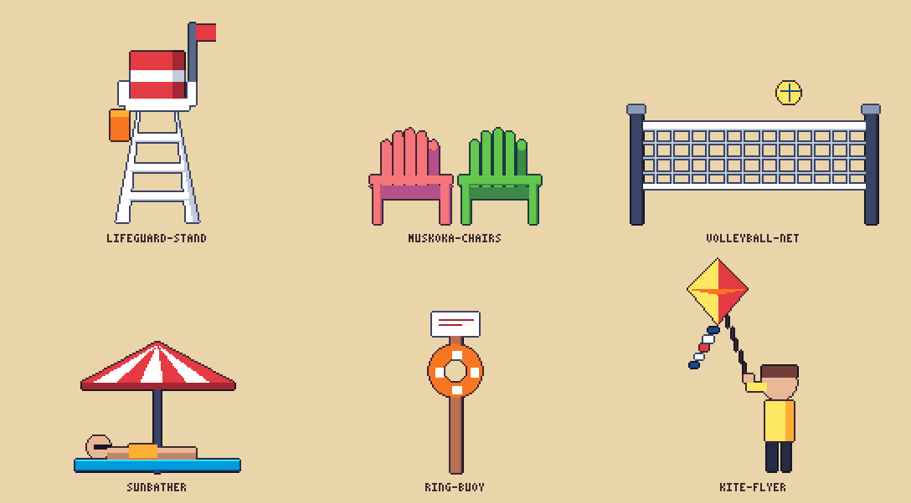